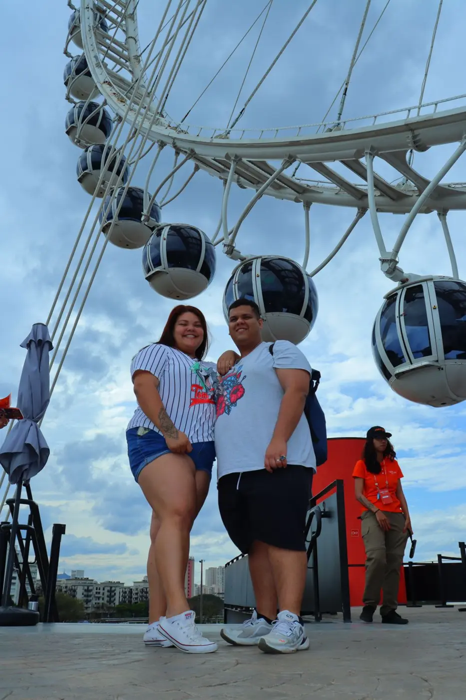
Feliz aniversário,
minha Churi!
Hoje o mundo comemora a existência da pessoa que deixa os meus dias mais bonitos.
Vem lembrar nossa história ↓“Princesa”
Gustavo Mioto feat. Ana Castela
Desde que escolhemos caminhar juntos
E ainda parece que o melhor da nossa história está só começando.
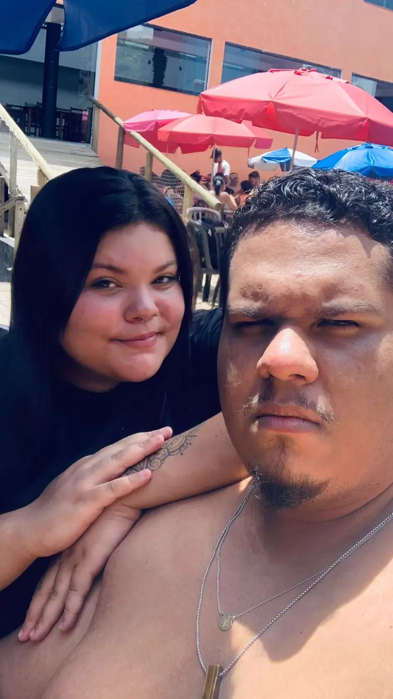
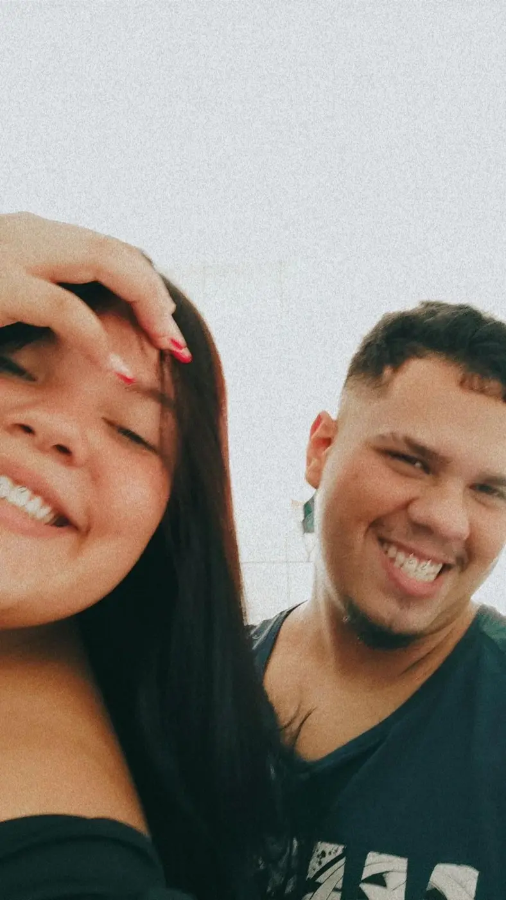
Um piquenique, uma surpresa e o começo do nosso para sempre.
Eu levei você para um piquenique no Parque Villa-Lobos e combinei tudo com uma fotógrafa. Ela nos abordou oferecendo um ensaio, eu insisti para você aceitar e, no meio das fotos, chegou a imagem que eu mais queria guardar: eu ajoelhado, pedindo você em casamento. Você disse sim. Depois passeamos pelo parque e fomos até a roda-gigante, já como noivos.
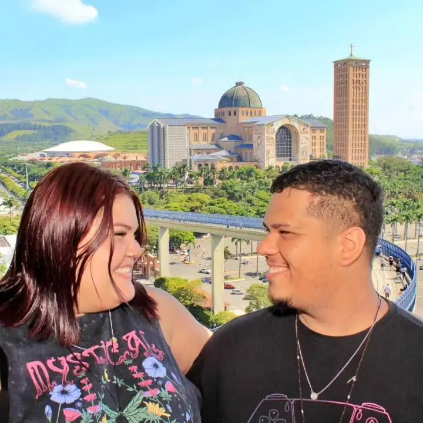
Conhecer, agradecer e viver a nossa fé juntos.
Uma vez por ano, vamos juntos a Aparecida agradecer. Também amamos visitar outras igrejas, conhecer religiões e transformar cada visita em um momentinho só nosso — de respeito, descoberta, fé e gratidão.
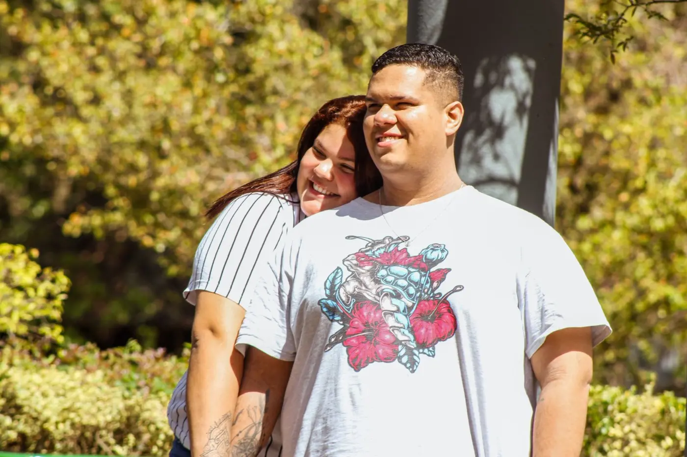
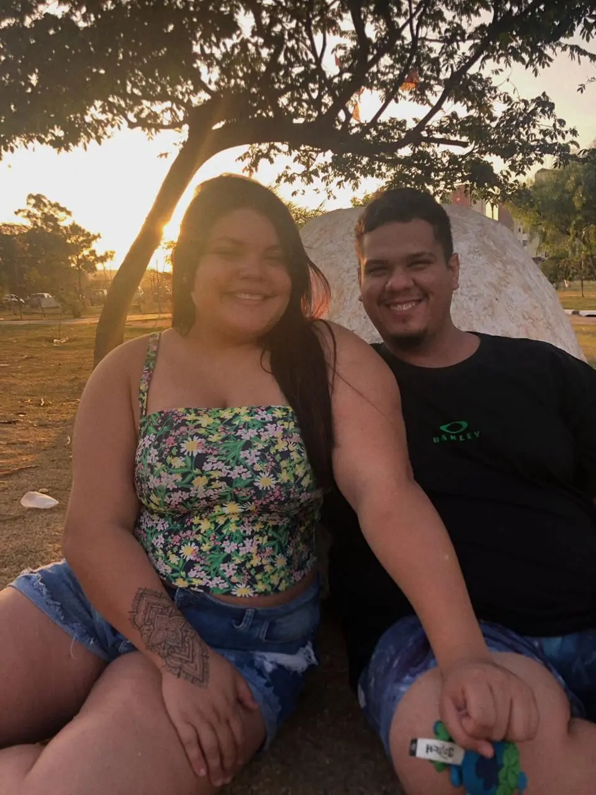
A gente ama fazer tudo junto.
Dos compromissos comuns aos passeios nos parques, de conhecer novos estados a andar por São Paulo descobrindo cada cantinho: tudo fica mais especial quando estamos juntos. O lugar pode mudar, mas o meu preferido continua sendo ao seu lado.
Um pouco do amor que cabe na câmera.
E muito do que não cabe.
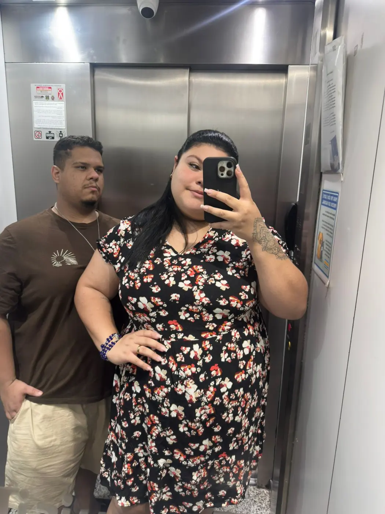
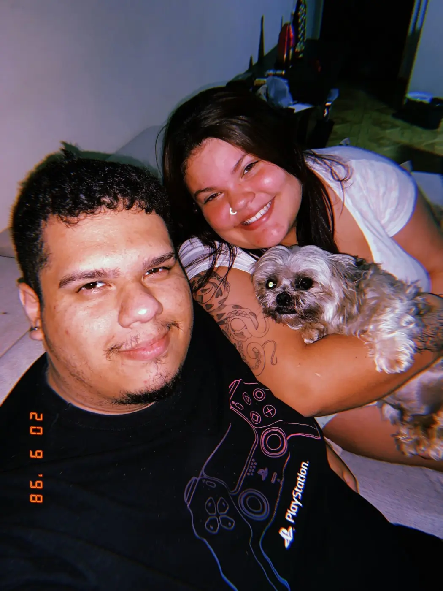
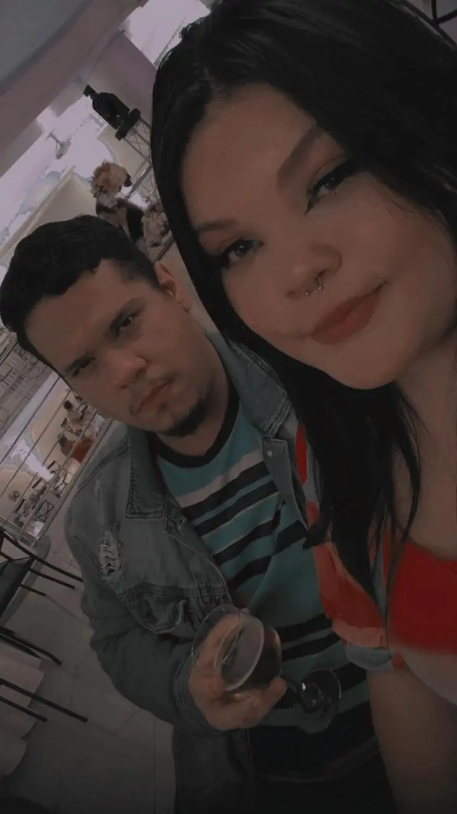
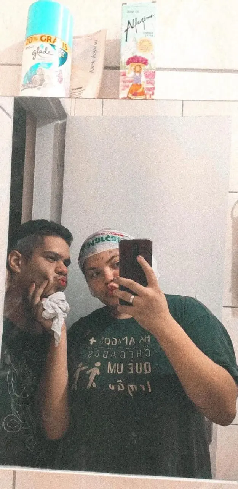
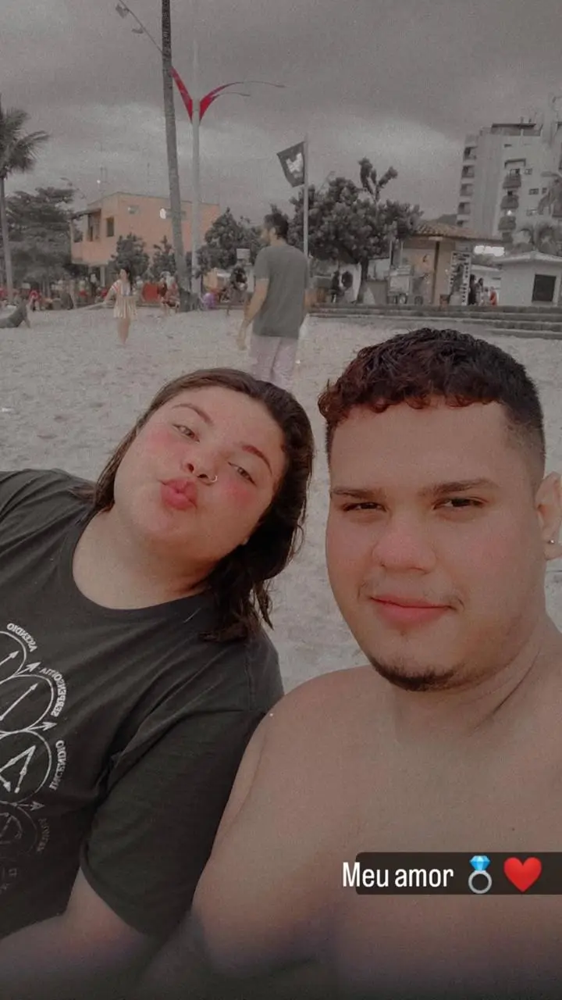
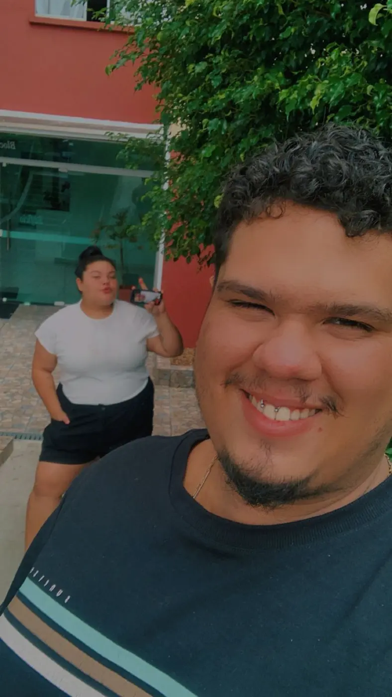
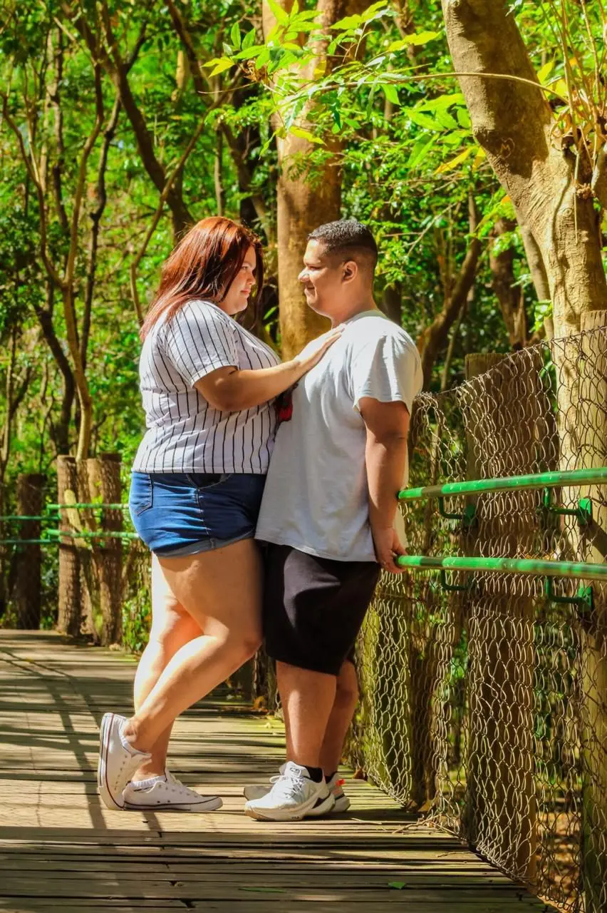
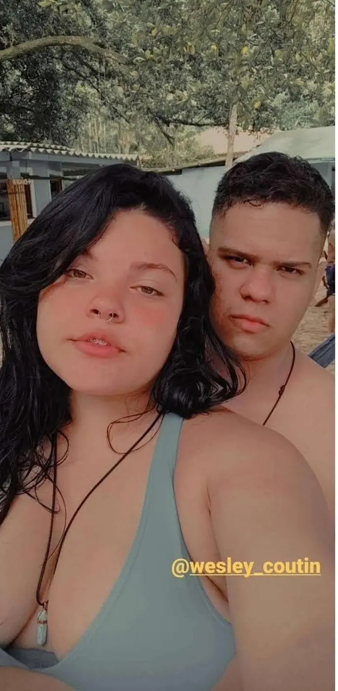
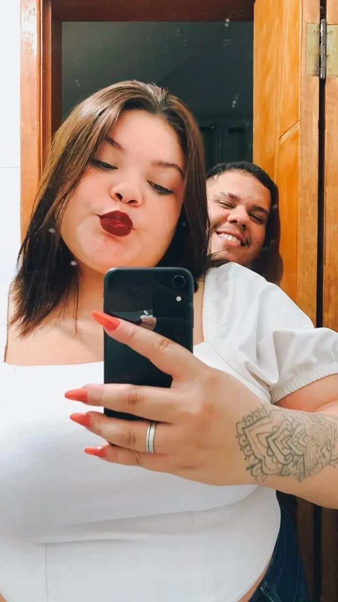
O seu jeitinho que só eu conheço.
Eu amo admirar você nos seus momentos carentinhas: toda fofa, dengosa, parecendo um neném. É nesse seu jeitinho doce que eu encontro ainda mais motivos para cuidar de você e te amar.
Para você, no seu aniversário
Minha Bem,
Hoje é o seu dia, mas quem recebeu o maior presente fui eu quando a vida colocou você no meu caminho. Desde 03 de outubro de 2020, construímos uma história cheia de momentos que guardo com muito carinho: nossos compromissos e passeios, os parques, os novos estados, cada cantinho de São Paulo e nossas visitas a Aparecida e a tantos lugares de fé.
Guardo especialmente o dia do nosso piquenique no Parque Villa-Lobos. A fotógrafa nos abordou como se tudo fosse por acaso, eu insisti para você aceitar o ensaio e, no meio das fotos, me ajoelhei para pedir você em casamento. Você disse sim. Depois caminhamos pelo parque e fomos à roda-gigante, levando conosco a felicidade de já estarmos noivos.
Eu amo todas as suas versões, mas confesso que tenho um carinho especial pela minha Churi carentinha, toda fofa e dengosa, parecendo um neném. Esse seu jeitinho me desmonta, aquece meu coração e desperta em mim uma vontade enorme de te proteger, cuidar de você e fazer você se sentir amada todos os dias.
Desejo que este novo ciclo traga tudo o que você merece: paz, saúde, conquistas, sonhos realizados e muitos motivos para sorrir. Quero continuar segurando sua mão em cada fase, comemorando suas vitórias, acolhendo você nos dias difíceis e criando muitas outras lembranças ao seu lado.
Obrigado por ser minha companheira, minha noiva, minha princesa e o meu lar. Feliz aniversário, meu amor. Que a nossa história continue sendo o meu capítulo preferido.
Eu te amo, Churi.
Do seu Bem, Wesley ♡